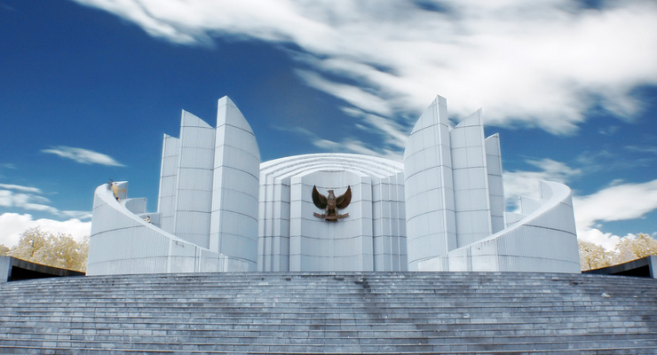

Intro

Monumen Perjuangan Rakyat Jawa Barat merupakan salah satu tempat wisata yang berada di kota Bandung, tepatnya di jalan Dipati Ukur No. 48. Monumen ini dibangun pada tahun 1995 dan didesain oleh Slamet Wirasonjaya (arsitek) dan Sunaryo (perupa). Monumen ini berbentuk bambu runcing yang didesain modern. Bambu runcing merupakan simbol perjuangan rakyat dalam melawan penjajah.
Information
Di permukaan bagian dalam monumen ini terdapat relief yang menceritakan sejarah perjuangan rakyat Indonesia, khususnya Jawa Barat. Salah satu yang digambarkan dalam relief ini adalah peristiwa Bandung Lautan Api, dan Pidato Pembelaan Bung Karno pada saat Sidang di Gedung Indonesia Menggugat. Selain itu terdapat pula prasasti berupa puisi dalam bahasa Sunda yang dibuat oleh seorang sastrawan bernama Saini KM.
Bagi Anda yang suka fotografi atau sekedar berfoto selfie, Monumen ini akan menjadikan Anda ketagihan untuk mengambil banyak gambar. Selain karena memukaunya warna putih dari monumen ini, pengunjung juga akan dimanjakan dengan banyaknya sudut yang menarik dan artistik. Namun hal tersebut sudah lumrah dilakukan banyak orang.
Ada hal lain yang lebih menarik dari sekedar mengambil gambar dengan latar belakang monumen. Jika Anda berkesempatan mengunjungi monumen ini, cobalah masuk ke ruang bawah tanah. Ya, di dalam monumen ini terdapat ruang bawah tanah yang apabila dilihat sepintas dari luar, maka tidak akan terlihat kedua pintu ruangan bawah tanah ini. Apakah isinya gudang peralatan senjata zaman perjuangan melawan penjajah ? Jika Anda punya tebakan seperti itu maka tepat sekali tebakannya.
Kebanyakan orang mengetahui monumen ini sebatas permukaan luarnya saja, termasuk warga Bandung sendiri ada yang tidak tahu ketika ditanya apa saja fasilitas yang ada di monumen tersebut. Tepat dibawah Monumen Perjuangan terdapat fasilitas yang bisa diakses oleh pengunjung secara gratis. Apa saja fasilitas itu ? Jawabannya adalah Museum.

Museum yang berlokasi dibawah Monumen ini dibagi menjadi 3 ruangan khusus yaitu, Ruang Diorama, Ruang Foto Dokumenter, dan Ruang Pameran Benda Bersejarah.
Ruang Diorama ini menggambarkan cerita tentang yang terjadi selama masa perjuangan pada masa penjajahan dan masa mempertahankan kemerdekaan Republik Indonesia. Contohnya adalah gambaran tentang perjuangan Raden Dewi Sartika dalam mendidik perempuan-perempuan di wilayah Bandung. Kemudian Ruang Foto Dokumenter. Ruangan ini berbentuk auditorium yang menampilkan foto-foto Bandung dan sekitarnya pada masa penjajahan dan masa mempertahankan kemerdekaan. Yang terakhir adalah Ruang Pameran Benda Bersejarah. Ruang ini menampilkan benda-benda bersejarah seperti, senjata, seragam tentara masa Hindia Belanda lengkap dengan atributnya, dan lain-lain.
Itulah gambaran mengenai Monumen Perjuangan Rakyat Jawa Barat dan Ruang Bawah Tanahnya. Untuk lebih jelas, sebaiknya Anda bergegas untuk pergi ke lokasinya. Monumen dibuka untuk umum dengan jadwal kerja dari Senin – Jum’at. Jangan lupa bawa kamera agar Anda tidak kehilangan momen penting di Monumen. Selamat Mencoba
Harga Tiket
Untuk harga tiket masuk gratis alias tidak dipungut biaya.
Jam Buka
Senin 08.00–15.00
Selasa 08.00–15.00
Rabu 08.00–15.00
Kamis 08.00–15.00
Jumat 08.00–15.00
Sabtu Libur
Minggu Libur
Gallery
Location

Monumen Perjuangan Jawa Barat berada di Jalan Dipatiukur No. 48 Bandung yang tepat berada di depan Universitas Padjajaran Bandung.
Untuk lebih detailnya bisa dilihat di Google Map di bawah ini.
About
 Perkenalkan Nama saya Widianto Afrizal. Saya dari kelas Pengembangan Web Batch 1 Talent Bandung. Ini merupakan Proyek akhir dari Talent Bandung dimana per individu harus bisa mengembangkan web yang bagus dan menarik bagi orang yang melihat dan mengunjungi web tersebut.
Perkenalkan Nama saya Widianto Afrizal. Saya dari kelas Pengembangan Web Batch 1 Talent Bandung. Ini merupakan Proyek akhir dari Talent Bandung dimana per individu harus bisa mengembangkan web yang bagus dan menarik bagi orang yang melihat dan mengunjungi web tersebut.
Untuk lebih mengenal, silakan follow instagram dan kunjungi media sosialnya. Linknya ada dibawah ini. Terimakasih